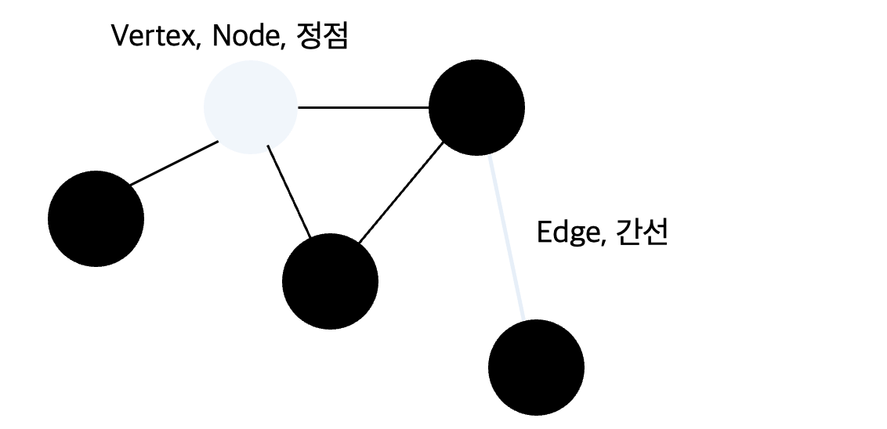
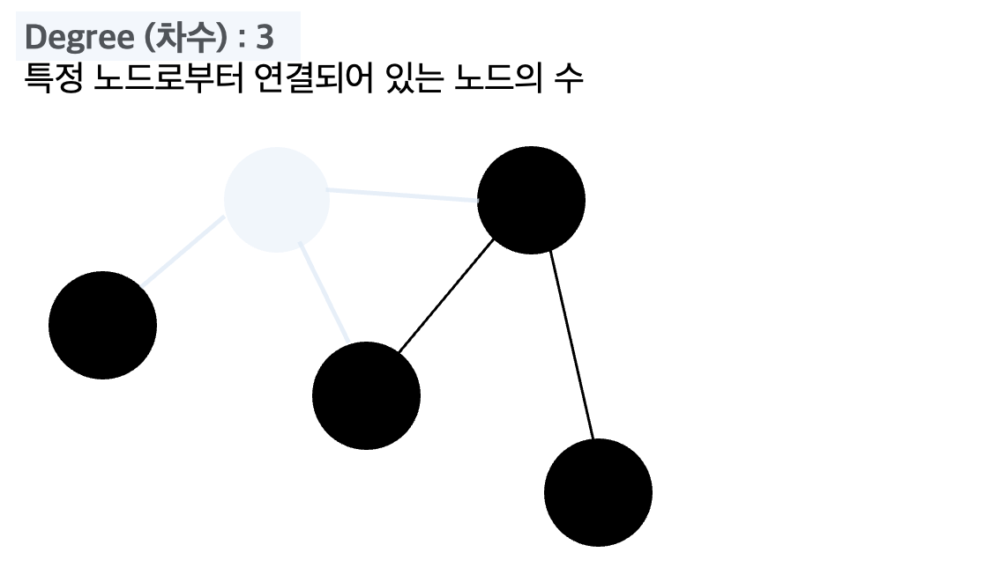
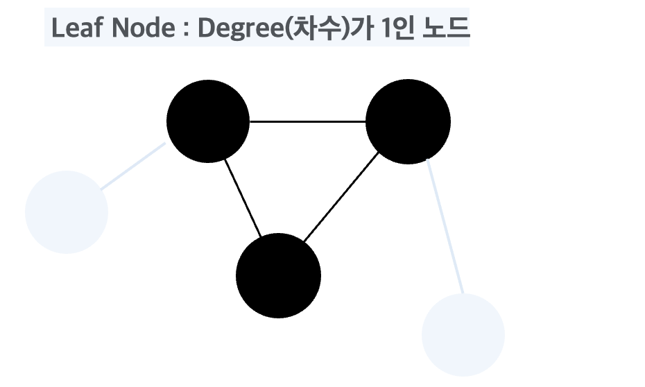
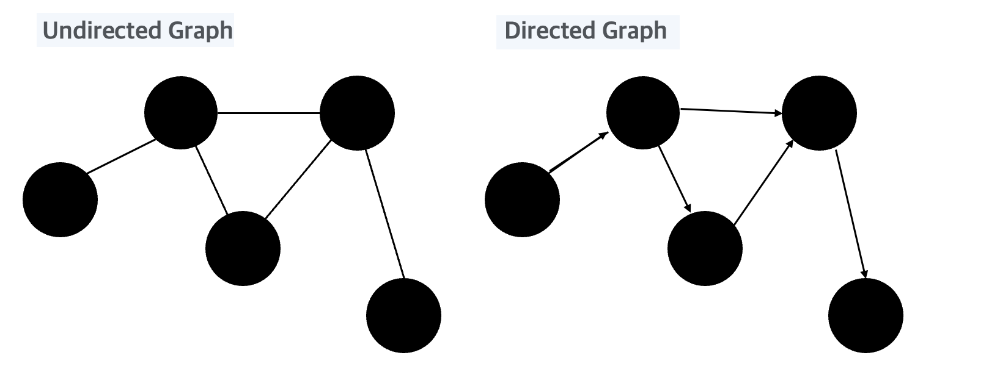
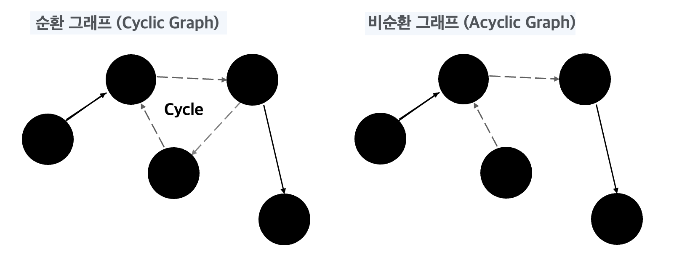

* 교내 동아리 알고리즘 학습 자료로 사용하기 위해 작성된 글입니다.
잘못된 내용을 포함하고 있을 수 있습니다.
Graph란?
그래프(Graph)는 노드와 노드를 연결하는 간선으로 구성되며 이러한 노드와 간선의 관계를 나타내는 자료구조이다.
그래프는 다양한 알고리즘에서 사용되는데 SNS 플랫폼의 경우 친구 추천 알고리즘, 지도, 네비게이션 알고리즘 등에서 사용된다.
이번 글에서는 그래프 학습 이전에 반드시 알아야할 개념에 대해 정리해 보고자 한다.
그래프 용어
1. 노드 (Vertex, 정점) 그래프에서 데이터를 담고있는 단위이다.
2. 간선 (Edge) 노드 사이를 연결하는 선. 노드와의 관계를 나타낸다.
(아래 그래프는 5개의 정점, 5개의 간선으로 이루어진 그래프이다.)
3. 차수 (Degree) 특정 노드와 간선으로 연결되어 있는 노드의 수
 
4. 리프노드 (Leaf Node) 차수가 1인 노드
- 이진트리의 단말노드와 리프노드의 개념을 혼동하는 사람이 많은데, 리프노드의 정확한 정의는 차수가 1인 노드이다.
(즉, 자식을 가지지 않는 노드를 의미한다.)

5. 무방향 그래프 [Undirected Graph] 간선이 방향성을 가지지 않는 그래프
6. 방향 그래프 [Directed Graph] 간선이 방향성을 가지는 그래프

* 간선은 방향성을 가질 수 있으며, 방향성을 가지지 않는 그래프를 무방향 그래프 [Undriected Graph] , 방향성을 가지는 그래프를 방향 그래프 [Directed Graph]라고 한다.
7. 사이클 사이클이란 한 정점에서 출발하여 자기 자신으로 돌아올 수 있는 경로를 의미한다.
이러한 "사이클"을 가지는 그래프를 순환 그래프 (Cylclic Graph), 사이클을 가지지 않는 그래프를 비순환 그래프 (Acyclic Graph)라고 한다.
